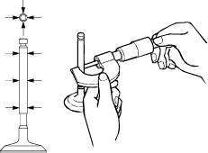
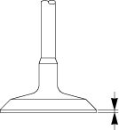
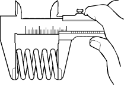

Valve Stem Outside Diameter Measurement
- Measure the valve stem diameter at three points. If the measured value is less than the specified limit, the valve and the valve guide must be replaced as a set.
Valve stem outside diameter:
Intake valve:
Standard:
5.959 – 5.977 mm (0.2346 – 0.2353 in.)
Limit:
5.945 mm (0.2341 in.)
Exhaust valve:
Standard:
5.954 – 5.972 mm (0.2344 – 0.2351 in.)
Limit:
5.940 mm (0.2339 in.)

- Measure the valve thickness.
If the measured value is less than the specified limit, the valve and the valve guide must be replaced as a set.
Intake and exhaust valve thickness:
Standard:
1.2 – 1.4 mm (0.05 – 0.06 in.)
Limit:
1.0 mm (0.04 in.)

Valve Spring Free Height Measurement
- Use a vernier caliper to measure the valve spring free height.
If the measured value is less than the specified limit, the valve spring must be replaced.
Valve spring free height:
Standard:
44.63 mm (1.757 in.)
Limit:
44.13 mm (1.737 in.)

Valve Spring Inclination Measurement
- Use a surface plate and a square to measure the valve spring inclination.
If the measured value exceeds the specified limit, the valve spring must be replaced.
Valve spring inclination:
Standard:
1.01 mm (0.04 in.)
Limit:
2.2 mm (0.09 in.)